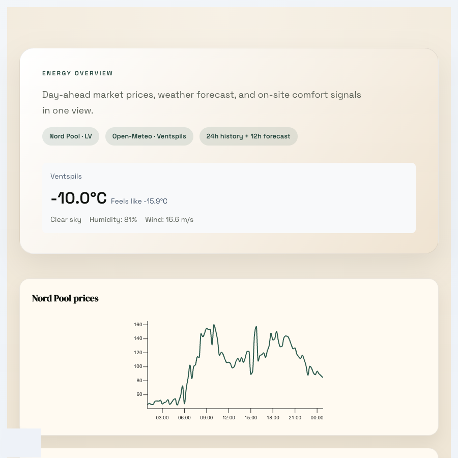
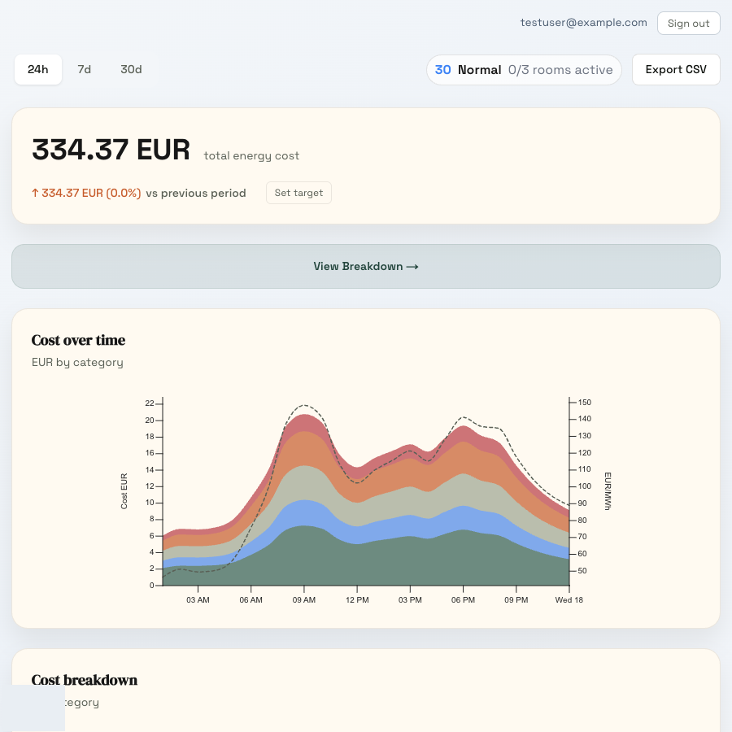
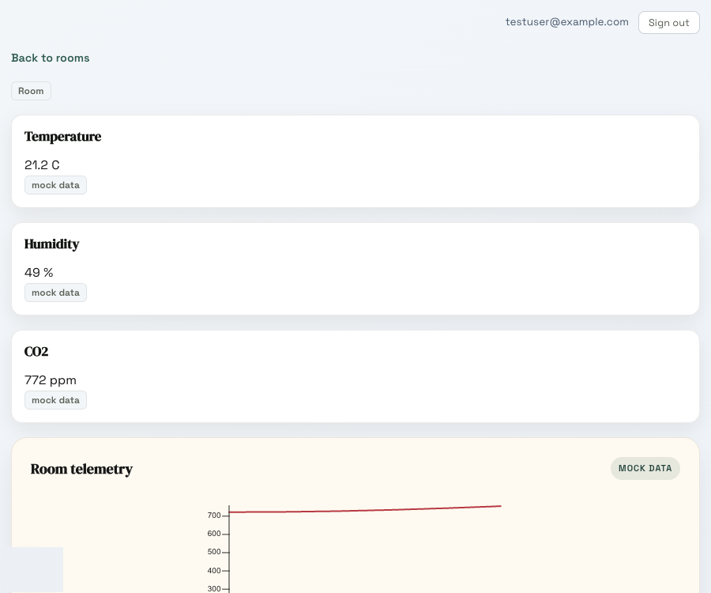
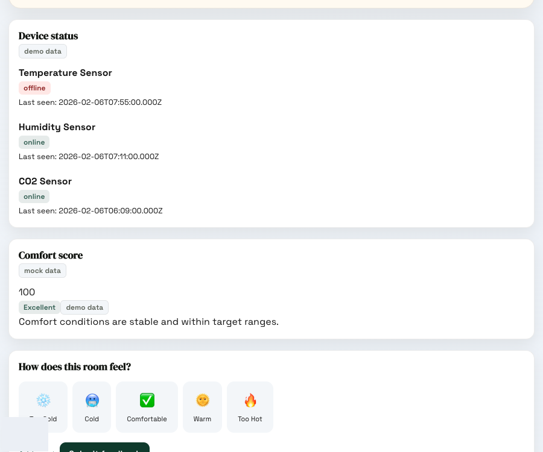
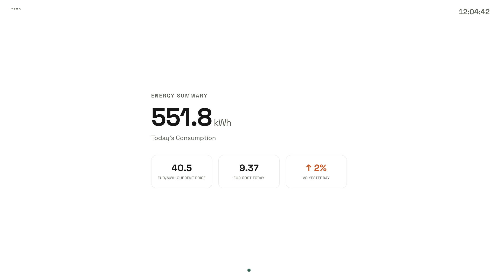
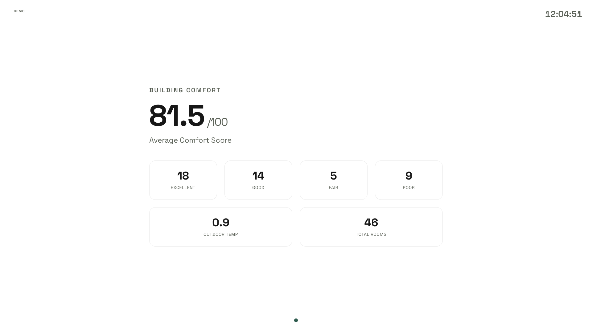
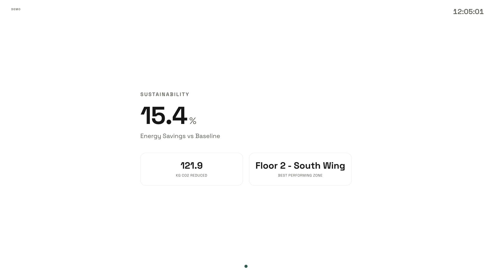
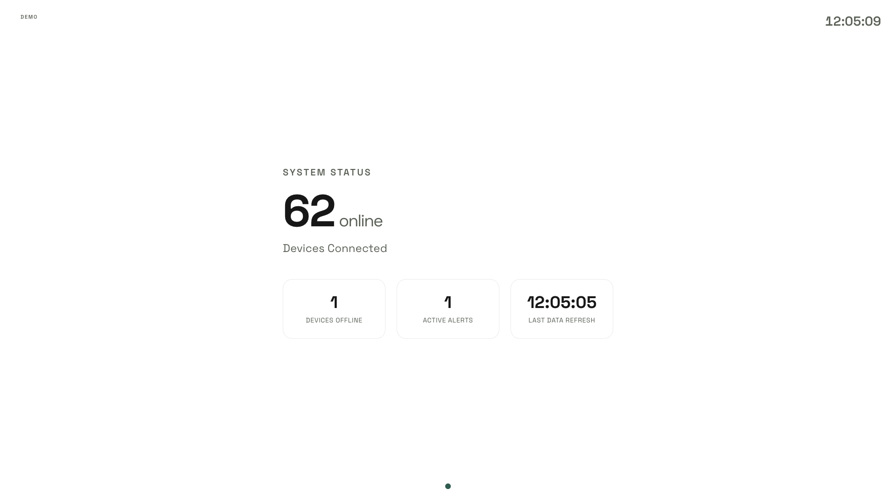

IPCEI-CIS Programme
VATP HVAC Platform
Building energy monitoring, HVAC control, and cost optimization
for Ventspils High Technology Park.
Partner Technical Overview · April 2026
02
Product Overview
What we're building
A platform that connects HVAC equipment to a web dashboard, so building operators can see what's happening, how much it costs, and control things remotely.
The Problem
- Commercial HVAC systems consume 40-60% of building energy
- Building operators lack visibility into real-time energy costs
- Manual control can't react to dynamic electricity prices
- Diverse equipment protocols create data silos
- No unified view across buildings, floors, and rooms
Our Solution
- Real-time monitoring of all HVAC sensors and devices
- Integration with electricity market prices (Nord Pool)
- One gateway that talks to all equipment regardless of protocol
- Configurable alerting — set thresholds, get notified when something's off
- Two-way control: read sensor data AND send commands to devices
- People in rooms can report if they're too hot or cold
Building Managers
See every building, floor, and room. Know what temperature it is, which equipment is running, what's offline.
Energy Managers
See how much energy costs right now, broken down by category. Compare against Nord Pool market prices.
Service Engineers
List of all devices, when they last reported in, send commands, see what's broken. Full audit trail.
03
Architecture
System Architecture
Everything runs on-premises at VATP. Cloud is only used for ML model training, backups, and long-term analytics.
Cloud
(EU Region)
AI / ML Training
Energy forecasting models, monthly retraining cycle
Long-term Analytics
DWH for portfolio analytics and savings reports
External APIs
Nord Pool (prices) · Open-Meteo (weather)
↕ data sync every few hours / trained models flow down
On-Premises
(VATP)
Web Application
Energy analytics · alerts · room comfort · TV displays · RBAC · audit logs
Gateway (Node-RED)
Protocol adapters · command routing · store-and-forward
Database
PostgreSQL + TimescaleDB · 90-day time-series · config
↕ sensor readings every 15-30 min / control commands flow back down
In-Building
HVAC Equipment
Heat pumps · chillers · ventilation · valves
Room Sensors
Temperature · CO2 · humidity via dock stations
Energy Meters
Smart meters · sub-meters per zone
04
Gateway
Protocol Gateway
A Node-RED instance that sits between HVAC equipment and the web app. Speaks the protocols that equipment speaks, forwards data in a common format.
MQTT
Pub/sub for IoT sensors via Mosquitto
Modbus
TCP/RTU for industrial devices
BACnet
Building automation controllers
REST
HTTP for dock stations & APIs
Gateway Capabilities
- ✓ Protocol adapters with configurable sensor mapping
- ✓ Normalization to standard {sensorId, value, unit, time}
- ✓ Store-and-forward queue with dead-letter handling
- ✓ Exponential backoff retry (1s → 8s → 64s)
- ✓ Command routing — web commands to device protocols
- ✓ JSON Schema validated config with hot-reload
- ✓ Health monitoring (MQTT status, queue depth)
How it works
1
Receive — Each protocol adapter subscribes to its source (MQTT topic, Modbus register, BACnet object, HTTP endpoint)
2
Normalize — Transform protocol-specific readings into a common format: {sensorId, value, unit, timestamp}
3
Queue — Batch readings and buffer them. If the web app is down, readings are held and retried automatically
4
Forward — POST batches to the web app's ingest API. App validates, scores quality, writes to TimescaleDB
Adding a new sensor type means adding one entry to the config file — no code changes, no redeployment.
05
Data Pipeline
How data moves through the system
Two directions: sensor readings come in, control commands go out. The gateway handles protocol differences so the web app doesn't have to.
Sensor readings in
Sensors & meters publish readings (temp, humidity, CO2, kWh) via their native protocol
↓ MQTT / Modbus / BACnet / REST
Gateway normalizes everything to {sensorId, value, unit, timestamp}, queues it in batches
↓ HTTP POST /api/ingest (with API key)
Web app validates, scores quality (good/suspect/bad), writes to TimescaleDB hypertable
Control commands out
Operator clicks "set heating to 45°C" in the web UI. Command saved with status: issued
↓ routed to gateway
Gateway translates command to device-specific protocol (e.g. write Modbus register 100 = 450)
↓ BACnet / Modbus / REST
Device executes, sends acknowledgment back. Command status updated to acked or rejected
If the network drops, readings are buffered locally and forwarded once connectivity is restored
Bad readings (sensor glitches, out-of-range values) are flagged, not silently dropped
Every command is logged with who sent it, when, and whether the device accepted it
06
The App
Energy Dashboard
Current electricity prices from Nord Pool, weather from Open-Meteo, building load, and comfort data on one screen.

Live weather (Ventspils) with Nord Pool and Open-Meteo data. 24h history + 12h forecast.

334 EUR total (24h). Stacked area chart by category with Nord Pool price overlay. Heat pump vs district heating comparison.
07
The App
Room View
Each room gets its own page: current temperature, humidity, CO2, sensor history, and a way for people to say if they're comfortable.

Room 101: temperature (21.2°C), humidity (49%), CO2 (772 ppm), telemetry chart, comfort score (100).

Occupant thermal feedback widget (Too Cold → Too Hot) with recent feedback timeline showing comfort patterns.
08
Public Display — TV Mode (auto-rotates, no login required)

Energy Summary — consumption, current price, daily costs

Building Comfort — average score, room breakdown

Sustainability — energy savings vs baseline, CO2 reduction

System Status — devices online/offline, active alerts
09
Security & Access Control
Access control & audit
Different people need different access. A service engineer shouldn't change cost targets. A viewer shouldn't send commands to equipment.
| Role | What they can do |
|---|
| Admin | Everything — users, config, commands |
| Facility Manager | Manage buildings, send commands, handle alerts |
| Energy Manager | View analytics, set cost targets |
| Service / Maint. | Device status, send commands, manage alerts |
| Auditor | Read-only access to everything including logs |
| Viewer | Read-only dashboards |
| Room (Tablet) | See room climate, submit comfort feedback |
| Org Admin | Manage organization-level settings |
Safety limits: Even authorized users can't set a heat pump above 55°C or below 15°C. Valve and fan speed capped at 100%. Emergency stop is always available.
How we handle security
- Login: Google OAuth with domain restriction — only allowed email domains can sign in
- Gateway auth: The ingest API requires a bearer token — random data can't be POSTed in
- Database: All queries use parameterized statements, no string concatenation
- Containers: App runs as a non-root user inside Docker
- Audit log: Every action (login, command, config change) is recorded with who did it and when
- Data location: Production data stays in EU (currently Scaleway Warsaw, target: on-prem at VATP)
10
Infrastructure
Deployment & Tech Stack
Target: a dedicated server at VATP running everything locally. During development, we host on a cheap Scaleway VM.
On-Premises — Server at VATP
- Web app: Next.js 16, React 19, TypeScript
- Database: PostgreSQL 14 + TimescaleDB (time-series)
- Gateway: Node-RED + MQTT broker (Mosquitto)
- Reverse proxy: Caddy
- Orchestration: Docker Compose (all services in containers)
Scaleway Cloud (EU, Warsaw region)
- ML training: Model training on synced time-series data
- Backups: Database snapshots to object storage
- Dev hosting: Temporary — running the app here until on-prem server is ready
- CI/CD: GitHub Actions builds Docker images, deploys via SSH
Technology Stack
Next.js 16
App Router, Server Components
React 19
Server Actions, Hooks
TypeScript
Strict mode, mandatory
TimescaleDB
Hypertables, compression
Node-RED
Visual flow gateway
Visx
React chart library
NextAuth.js v5
Google OAuth + RBAC
Docker
Multi-stage builds
Tailwind CSS 4
Utility-first styling
Playwright
E2E test framework
11
Connectivity
What we connect to
The platform pulls in external data to give context to what's happening in the building — electricity prices, weather, and metering data.
Nord Pool
Hourly electricity market prices (EUR/MWh) for the Baltic/Nordic region. Day-ahead prices available too.
Live
Open-Meteo
Weather forecast and current conditions for Ventspils. Helps anticipate heating/cooling demand.
Live
Google OAuth
Login via Google accounts. Only emails from allowed domains can access the system.
Live
Electricity Meters
Controller proxies connected to electricity counters in the building. Actual consumption data via Modbus/MQTT.
In Progress
DWH
Cloud storage for training ML models on historical data. Synced from on-prem database periodically.
Planned
BMS / SCADA
Existing building management systems. Connected through the multi-protocol gateway.
In Progress
Integration boundary: Everything goes through the gateway's standard REST API. The web app never talks directly to field devices — the gateway is swappable without touching the rest of the stack.
12
Roadmap
Where we are and where we're going
The web app, gateway, and database are working. Next step is connecting to real equipment in a real building.
Now
Software ready
- Web app with dashboards, alerts, room monitoring
- Gateway handling 4 protocols
- Running on temporary Scaleway hosting
- Nord Pool and weather data connected
→
Next
Pilot at VATP
- Connect real sensors and HVAC equipment
- Deploy on-prem server at VATP
- Hook up electricity meters via controller proxies
- Validate data quality with actual readings
→
Later
ML and optimization
- Train forecasting models on collected data
- Floorplan visualization with sensor overlays
- SMS/email alerts for critical events
- Expand to additional buildings
The system is designed to work without internet. Cloud is used for model training and backups, but the building keeps running on local data if the connection drops.